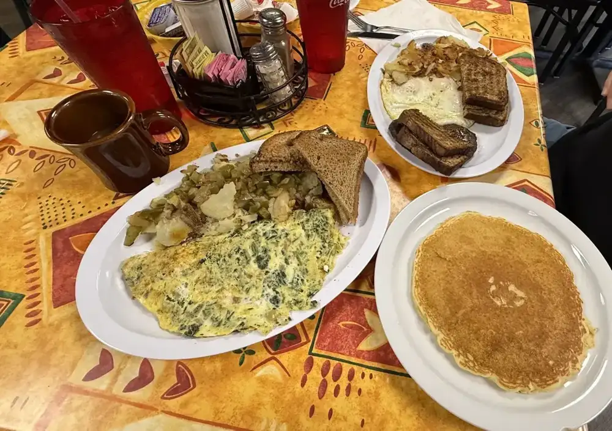
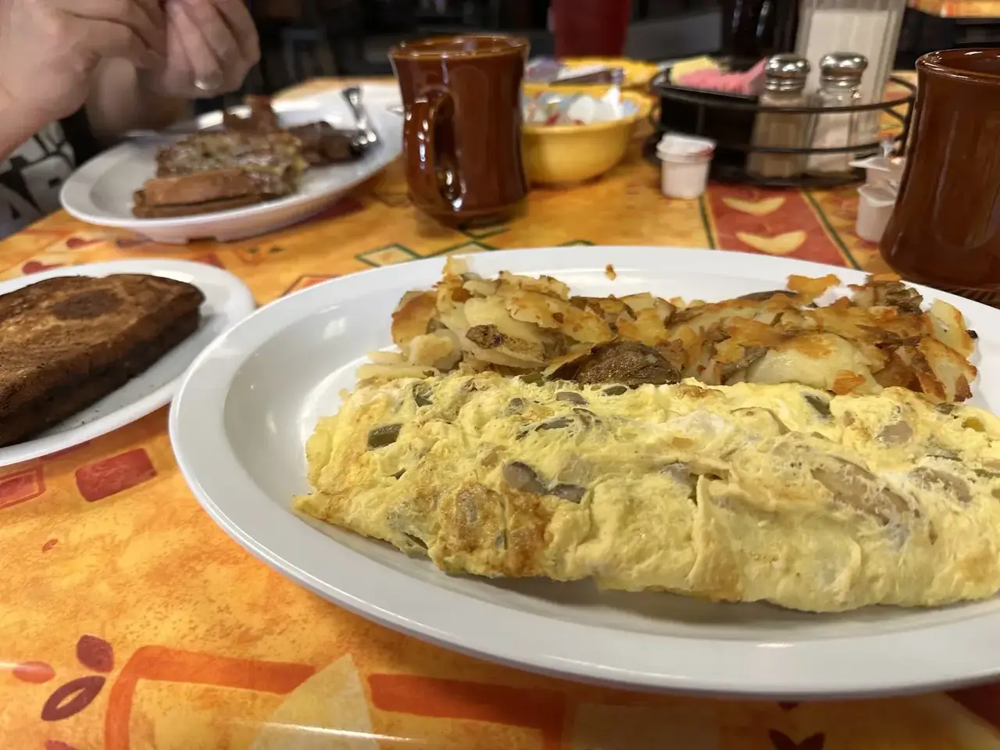
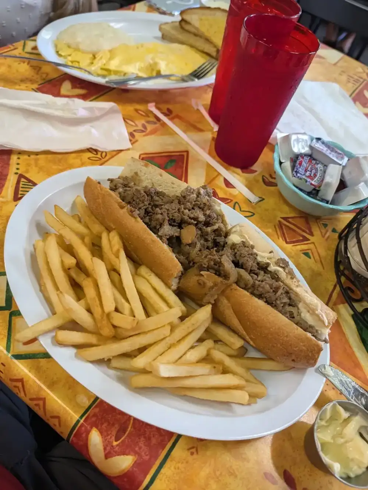
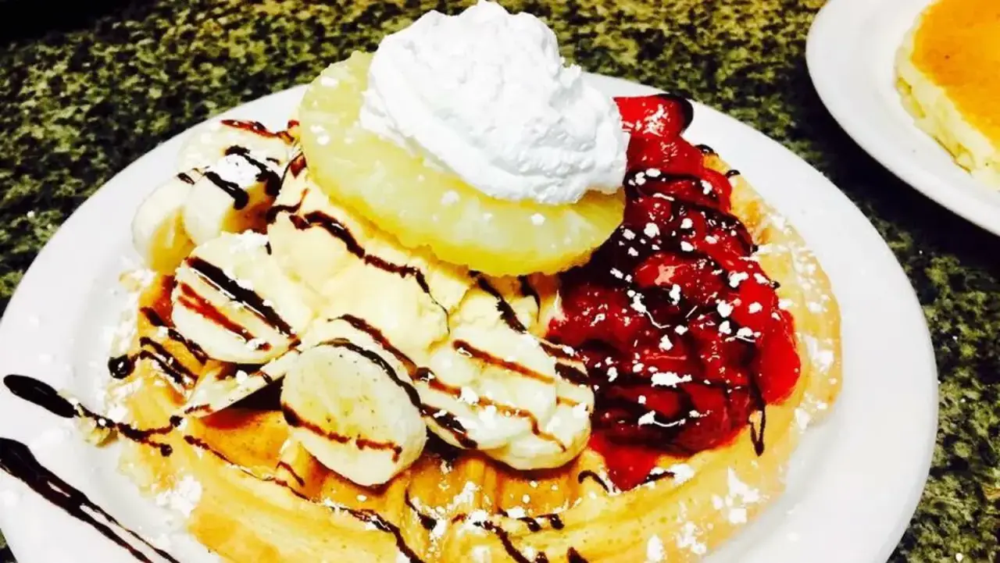
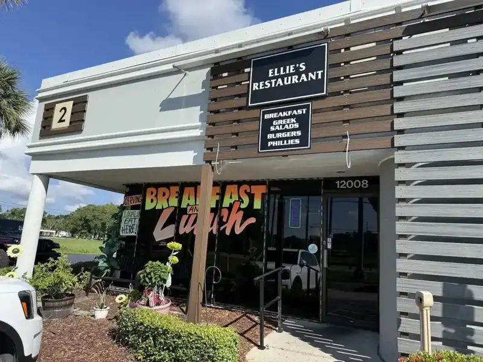
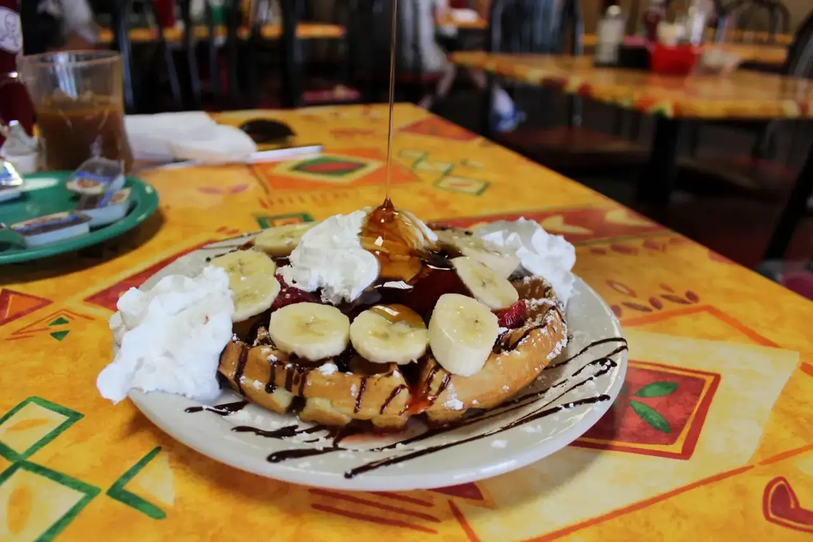
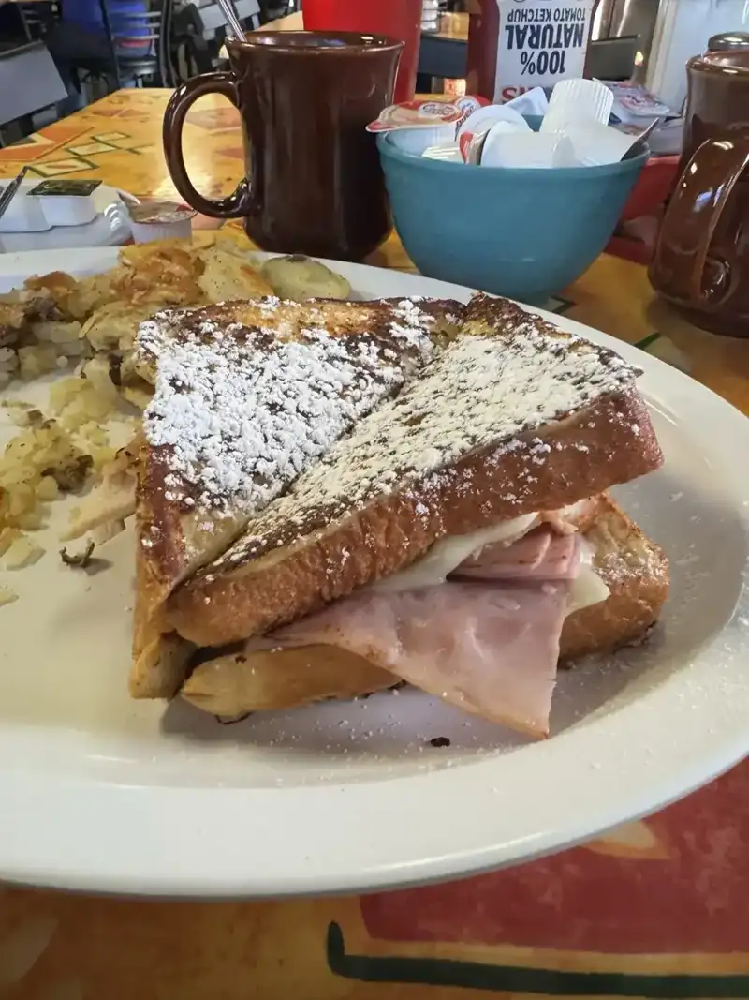
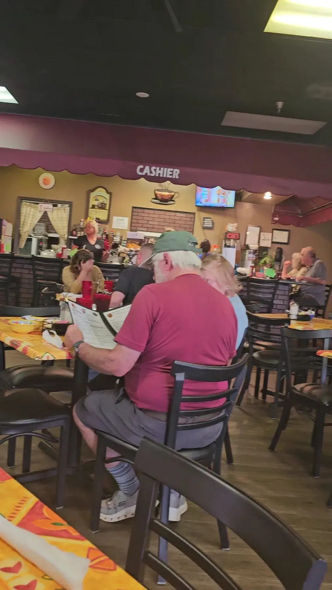
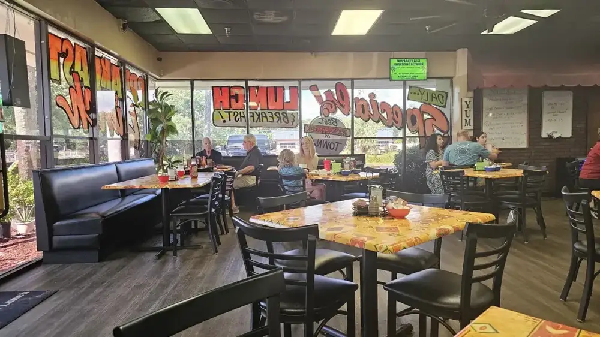

Breakfast
Omelets with fresh-potato home fries, including a veggie omelet. A normal breakfast, prepared right.
Breakfast & lunch · Tampa, FL
Hometown diner plates, fresh home fries and friendly service, 7 days a week.

Good food, fair prices
Breakfast and lunch, made fresh.

Omelets with fresh-potato home fries, including a veggie omelet. A normal breakfast, prepared right.

Quick bites for the lunch hour, made to go or to stay.

Blueberry French toast with bacon, and strawberry and banana pancakes.

Breakfast served all day




4.7 ★ · 1372 Google reviews
GUEST CHECK№ 1🌟🌟🌟🌟🌟 Incredible hospitality and delicious food!Five stars for Ellie's Breakfast & Lunch! Georgia was fantastic. Since my mom only speaks Spanish, Georgia kindly brought over a Spanish-speaking coworker to help explain the menu to her. The whole staff was extremely attentive, constantly passing by to make sure we were taken care of. The food came out in massive portions, tasted delicious, and was very well-priced.
GUEST CHECK№ 2Cute restaurant with excellent service! Tammy was very friendly and attentive. Food was really good and love they use fresh potatoes for their home fries. We will definitely be back next time we are in town. I had the veggie omelet and my husband had the blueberry French toast with bacon.
GUEST CHECK№ 3We stopped in for breakfast. I was looking for just a regular breakfast, didn't want an overpriced foo foo omelet, just a normal breakfast. The staff was great, very nice and friendly, the atmosphere was what you would expect, filled with locals seemingly enjoying thier food. The place was clean and well kept. The food was just what I was looking for. Tasty, prepared correctly, and delicious.

Since the first pot of coffee
Booths and tables with colorful print cloths. Hand-lettered signs in the window.
A family business with attentive servers. Parking is easy and kids are welcome.
Slide on in
12008 Race Track Rd, Tampa, FL 33626
Easy parking out front. Dine in or to go, every day 7 AM to 2 PM.